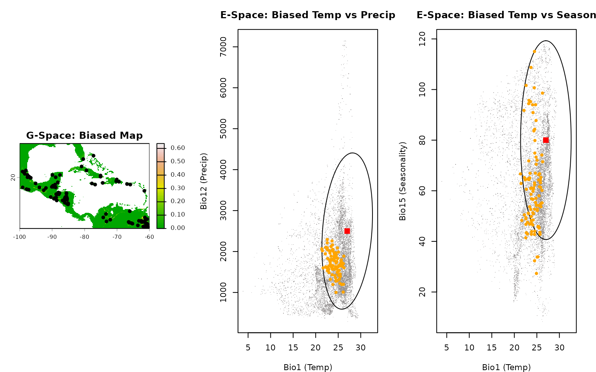

Generate occurrence data with bias
Source:vignettes/generating_occurrence_bias.Rmd
generating_occurrence_bias.RmdDescription
In the real world, species occurrence data is rarely collected systematically. It is usually heavily influenced by human accessibility—researchers sample near roads, rivers, towns, or protected areas. This is known as Collection Bias (or Observer Bias).
If a model is trained on biased data without accounting for it, the model will predict where the observers go, rather than where the species actually lives.
This vignette demonstrates how to use the nicheR package
to simulate this real-world phenomenon. We will draw occurrence points
from a prediction surface that has already been mathematically
multiplied by a bias layer (e.g., distance to roads), allowing us to see
how anthropogenic factors distort our view of the species’ niche.
Getting ready
First, we load our core packages, the environmental background, and our reference fundamental niche.
Instead of building a new prediction surface and applying bias
manually, we will load a pre-calculated raster
(applied_bias_rast.tif) that already contains our combined
habitat suitability and sampling probability.
# Load packages
library(nicheR)
library(terra)
# 1. Load environmental background
bios <- terra::rast(system.file("extdata", "ma_bios.tif", package = "nicheR"))
vars <- c("bio_1", "bio_12", "bio_15")
# 2. Load reference niche (nicheR_ellipsoid object)
data("example_sp_4", package = "nicheR")
# 3. Load the pre-calculated, bias-adjusted prediction surface
# This raster represents: (Habitat Suitability) * (Accessibility Bias)
pred_biased <- terra::rast(system.file("extdata", "applied_bias_rast.tif", package = "nicheR"))Basic generation with bias
The sample_biased_data() function works similarly to
standard sampling, but we point it toward our bias-adjusted raster
layer.
Key Arguments
n_occ: The total number of virtual occurrence points to generate.prediction: The spatial raster (SpatRaster) containing your geographic predictions. In this workflow, this raster has the collection bias already applied to it.prediction_layer: The exact name of the layer within yourpredictionraster to use for the sampling weights (e.g.,"suitability_biased").strict: Logical. IfTRUE, strictly forbids generating points in pixels that have a value of 0. IfFALSE, allows a small probability for points to be generated in marginal habitats simulating mapping errors or sink populations.seed: Sets the random seed ensuring your generated points are exactly reproducible.
Once the spatial points (Longitude/Latitude) are generated, we must
use terra::extract() to pull the underlying climate values
(Bio1, Bio12, Bio15) at those specific coordinates so we can plot them
in Environmental Space (E-Space).
# Generate 100 occurrences from the biased suitability layer
occ_biased_xy <- sample_biased_data(
n_occ = 100,
prediction = pred_biased,
prediction_layer = "suitability_biased_direct",
strict = FALSE,
seed = 123
)
#> Starting: sample_biased_data()
#> Done: sampled 100 points from biased prediction layer
# Extract the environmental climate data at these physical coordinates
occ_biased <- terra::extract(bios, occ_biased_xy[, c("x", "y")])
env_biased <- terra::extract(bios, occ_biased_xy[, c("x", "y")])Visualizing spatial bias vs. collection bias
When we visualize biased occurrences, we are looking for the “distortion” caused by human sampling effort. Let’s visualize this side-by-side to see the geographic and environmental distortion simultaneously.
par(mfrow = c(1, 3), mar = c(4, 4, 3, 2))
# Plot 1: G-Space (Map with biased suitability)
plot(pred_biased[["suitability_biased_direct"]], main = "G-Space: Biased Map", col = grDevices::terrain.colors(50))
points(occ_biased_xy[, c("x", "y")], pch = 20, col = "black", cex = 1.2)
# Plot 2: E-Space (Temperature vs Precipitation)
plot_ellipsoid(example_sp_4, background = as.data.frame(bios[[vars]]), dim = c(1, 2), pch = ".", col_bg = "#9a9797",
xlab = "Bio1 (Temp)", ylab = "Bio12 (Precip)", main = "E-Space: Biased Temp vs Precip")
add_data(occ_biased, x = "bio_1", y = "bio_12", pts_col = "orange", pch = 20)
add_data(as.data.frame(t(example_sp_4$centroid)), x = "bio_1", y = "bio_12", pts_col = "red", pch = 15, cex = 1.5)
# Plot 3: E-Space (Temperature vs Seasonality)
plot_ellipsoid(example_sp_4, background = as.data.frame(bios[[vars]]), dim = c(1, 3), pch = ".", col_bg = "#9a9797",
xlab = "Bio1 (Temp)", ylab = "Bio15 (Seasonality)", main = "E-Space: Biased Temp vs Season")
add_data(env_biased, x = "bio_1", y = "bio_15", pts_col = "orange", pch = 20)
add_data(as.data.frame(t(example_sp_4$centroid)), x = "bio_1", y = "bio_15", pts_col = "red", pch = 15, cex = 1.5)
What to look for in the plots above:
G-Space (The Map): In an unbiased scenario, points cluster strictly in the most suitable (greenest) habitats. Here, notice how the points are forced into artificial geographic patterns (e.g., linear clusters mimicking roads, or tight clumps near hypothetical towns), completely ignoring large swaths of highly suitable habitat simply because they are “hard to reach.”
E-Space (The Niche): This is where the danger of bias becomes obvious. The red square is the optimal climate for the species. If sampling was unbiased, the orange dots would cluster around that red square. Instead, because observers only sampled accessible areas, the orange dots are dragged away from the optimal centroid and pushed into marginal, peripheral climates. If you trained a model on this data, the model would incorrectly assume the species prefers those marginal climates!